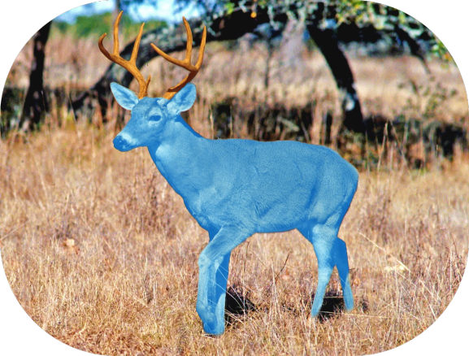

The Alkafatery Deer
alkafaterys are mythical blue deer with orange antlers, when they are young they have white antlers and teal body but when they grow up they get orange antlers and a blue body. they live in the floating islands of alapotir untouched and isolated from other species for millions of years until they were discovered by humans in the year 2022 in brazil. alfakaterys can live up to 650 to 700 years, because their metabolism is extremely slow, and their heart rate is usually at 1 beat per minute, that's why they live so long. they eat iorte crickets and vacrenn frogs.
sometimes, they will bite each other ears for fun.
by atheodog, november 2022 paraíba, brazil.